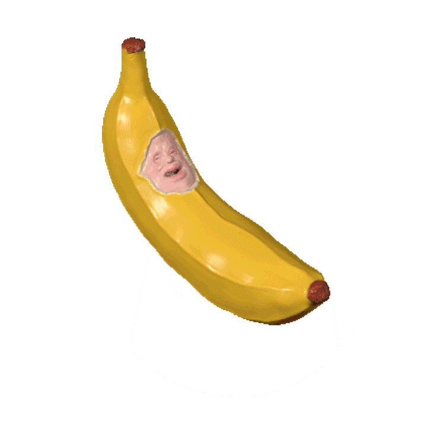
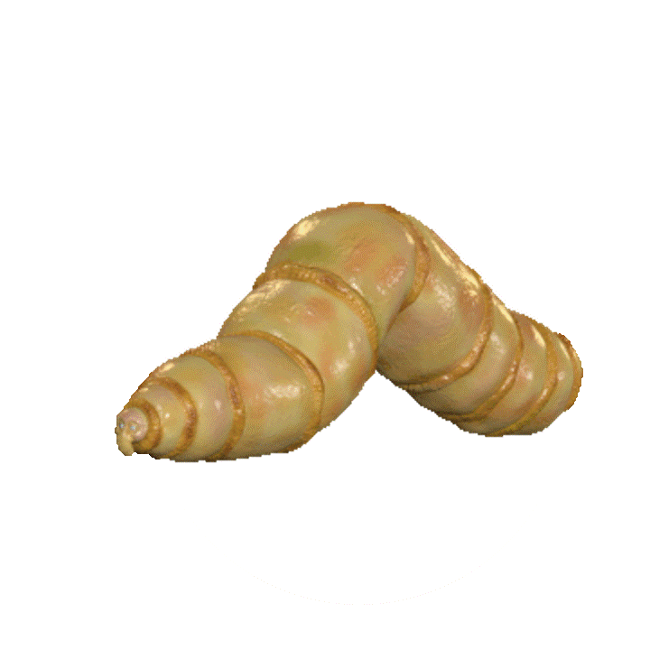
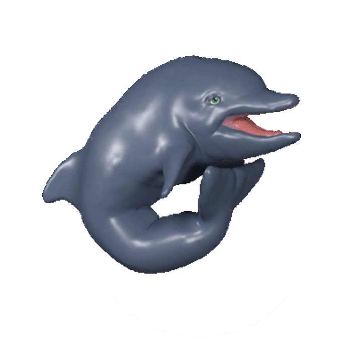

When you Eat,
이럴 때 드세요!
저희 가게의 젤리들은 다른 젤리들과 다르기 때문에, 젤리를 먹어야 될 때와 장소, 방법이 다릅니다.
같이 첨부한 주의사항을 꼭 읽고 젤리를 즐기시길 바랍니다.
1.
" 우리 젤리들, 언제 먹을까요? "
1. 아이들 간식으로!
[살아 있는] 바나나 젤리 ☆
아이들이 정말 좋아하는 바나나 우유맛 젤리입니다.
사정없이 껍질을 쥐어 뜯어서 크게 한입 베어 물어 보세요!
꿈틀꿈틀 살아 움직이는 생생함이 그대로 전달됩니다!
아이들이 정말 좋아해요.
2.
" 우리 젤리들, 언제 먹을까요? "
2. 단백칠 보충식으로,
[마당에서 채집한] 구더기 젤리 ◈
헬짱들은 단백질 음식을 정말 찾아다니는데요,
이 구더기 젤리에는 한 마리의 젤리만 먹어도 50g이라는 어마무시한 단백질이 가득!
고소한 풍미와 톡톡 터지는 식감까지 일석이조랍니다.
3.
" 우리 젤리들, 언제 먹을까요? "
3. 건강을 위한 보양식으로
[멸종위기종] 짱돌고래 ♡
위, 장, 관절 건강에 고루 좋다는 짱돌고래를
저희 젤리가게가 어렵게 입수하여 만든 돌고래 젤리입니다.
멸종 위기 동물 포획범으로 경찰에 잡힐 수도 있으니, 빨리 드세요!